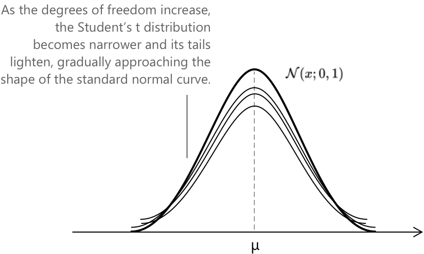
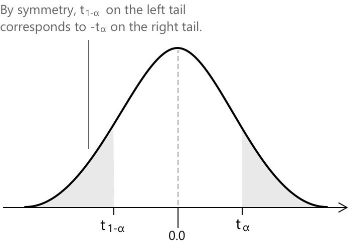

Розподіл Стьюдента
Вступ до \(t\)-розподілу Стьюдента
У статистичному висновку, коли метою є отримання висновків про середнє значення нормально розподіленої сукупності, але дисперсія невідома і має бути оцінена за вибіркою, стандартний нормальний розподіл \(\mathcal{N}(x; 0, 1) \) більше не є правильною референтною моделлю. У таких ситуаціях використовується розподіл Стьюдента \(t\), оскільки він враховує додаткову мінливість, що виникає при оцінюванні дисперсії сукупності. Стьюдентівська \(t\)- неперервна випадкова величина визначається як:
\[ T = \frac{Z}{\sqrt{V/k}} \]
- \( Z \) — стандартна нормальна випадкова величина.
- \( V \) — випадкова величина хі-квадрат з \( k \) ступенями свободи, незалежна від \( Z \).
- \( k \) позначає кількість ступенів свободи та визначає, наскільки «важкими» є хвости розподілу.
Для випадкової величини \( T \) розподілу Стьюдента з \( k \) ступенями свободи функція щільності ймовірності має вигляд:
\[ f(t,k) = \frac{\Gamma\left(\frac{k+1}{2}\right)}{\Gamma\left(\frac{k}{2}\right)\sqrt{k\pi}} \left(1 + \frac{t^{2}}{k}\right)^{-\frac{k+1}{2}} \]
Цей вираз показує, як форма розподілу залежить від параметра \( k \). Менші значення \( k \) створюють важчі хвости, що відображає додаткову невизначеність, пов'язану з оцінюванням дисперсії сукупності. При \( k \to \infty \) щільність збігається до стандартного нормального розподілу \(\mathcal{N}(x; 0, 1). \)

Графік наочно демонструє, як \(t\)-криві поступово звужуються навколо центру зі зростанням ступенів свободи, ілюструючи плавний перехід від розподілу з важчими хвостами до знайомої дзвоноподібної форми нормальної моделі.
-
Загальна площа під кривою дорівнює \(1\). Це означає, що інтеграл її функції щільності ймовірності по всій дійсній прямій, від \(-\infty\) до \(+\infty\), дорівнює \(1\).
-
Крива є симетричною відносно середнього значення \(0\). Оскільки розподіл Стьюдента центрований у нулі та є симетричним, половина загальної ймовірності припадає на кожну сторону від початку координат.
-
Крива має дві точки перегину, розташування яких залежить від ступенів свободи \(k\). Для малих \(k\) точки перегину лежать далі від центру, що відображає важчі хвости; зі збільшенням \(k\) вони наближаються до \(0\), наближаючись до точок перегину стандартної нормальної кривої.
-
Крива є асимптотичною до осі x. У міру того як \(t\) віддаляється від центру, щільність ймовірності наближається до (0), але повільніше, ніж у нормальному розподілі при малих \(k\), через важчі хвости.
Ключові особливості
-
\[ \text{1. } \quad f(t; k) = \frac{\Gamma\left(\frac{k+1}{2}\right)} {\Gamma\left(\frac{k}{2}\right)\sqrt{k\pi}} \left(1 + \frac{t^{2}}{k}\right)^{-\frac{k+1}{2}} \]
-
\[ \text{2. } \quad \mu = E(T) = 0 \quad \text{для } k > 1 \]
-
\[ \text{3. } \quad \sigma^{2} = \mathrm{Var}(T) = \frac{k}{k-2} \quad \text{для } k > 2 \]
Кожен вираз узагальнює фундаментальну властивість розподілу Стьюдента \(t\), центр якого зафіксовано в нулі, тоді як його розсіяння та поведінка хвостів повністю залежать від ступенів свободи \(k\).
Середнє значення та дисперсія розподілу Стьюдента \(t\) існують лише тоді, коли інтеграли, що їх визначають, є збіжними. Для \(k \le 1\) інтеграл для середнього значення розбіжний, а для \(k \le 2\) інтеграл для дисперсії розбіжний, оскільки розподіл має важкі хвости, що означає, що щільність зменшується настільки повільно, що значення, далекі від центру, вносять достатній вклад, щоб зробити інтеграл нескінченним.
Симетрія \(t\)-розподілу Стьюдента
Розподіл Стьюдента \(t\) є симетричним відносно нуля, і ця структурна властивість має важливі наслідки для інтерпретації його критичних значень. Оскільки ліва та права сторони кривої є дзеркальними відображеннями одна одної, кожна ймовірність, розташована в одному «хвості», відповідає рівній ймовірності в протилежному «хвості». Ця симетрія може бути виражена через співвідношення
\[ t_{1-\alpha} = -\,t_{\alpha} \]
яке стверджує, що значення \(t\), яке залишає площу \(1 – \alpha\) у правому «хвості», є просто від'ємним значенням \(t\), що залишає площу \(\alpha\) у тому самому «хвості». Відповідно, квантиль зліва, що охоплює ймовірність \(\alpha\), розташований на тій самій висоті, що й його аналог у правому «хвості», але віддзеркалений відносно вертикальної осі.

Припустимо, що площа ліворуч від \( t_{1-\alpha} \) становить приблизно 12%, тоді площа праворуч від \( t_{\alpha} \) є приблизно такою самою, близько 12%. Разом два «хвости» становлять близько 24% від загальної площі під кривою.
Візуально графік щільності \(t\)-розподілу робить цю поведінку очевидною: крива спускається від свого піка в нулі цілком збалансовано, а затінені області «хвостів» збігаються як за формою, так і за величиною.
При обчисленні площ під \(t\)-розподілом Стьюдента процедура схожа на ту, що використовується для інших неперервних розподілів. Так само як стандартний нормальний розподіл покладається на z-таблиці для визначення кумулятивних ймовірностей і критичних значень, \(t\)-розподіл використовує спеціальні t-таблиці. У цих таблицях наведені критичні значення, пов'язані з конкретними площами «хвостів», але вони також враховують кількість ступенів свободи \( k \), які визначають точну форму розподілу.
Ідея така сама, як і у випадку з нормальним розподілом: z-таблиці дозволяють знайти або ймовірність \( P(Z < z) \), або z-значення, що відповідає обраній площі. T-таблиці служать тій самій меті для \(t\)-розподілу, з тією лише відмінністю, що кожен рядок відповідає іншому значенню \( k \). Оскільки розподіл змінюється залежно від \( k \), критичні значення також змінюються.
На практиці обидві таблиці забезпечують зручний спосіб отримання ймовірностей і квантилів без обчислення інтеграла функції щільності, при цьому t-таблиці поширюють логіку z-таблиць на ситуації, коли дисперсію необхідно оцінити за вибіркою.
Приклад 1
Припустимо, ми хочемо визначити значення \(t\)-статистики з \( k = 12 \) ступенями свободи, яке залишає площу \( 0.01 \) у лівому «хвості» розподілу. Оскільки \(t\)-розподіл Стьюдента є симетричним відносно нуля, значення \(t\), яке залишає площу \( 0.01 \) у лівому «хвості», відповідає від'ємному значенню \(t\), яке залишає площу \( 0.01 \) у правому «хвості». З точки зору квантилів це означає:
\[ t_{0.99} = -\,t_{0.01} \]
Щоб знайти потрібне значення, ми використовуємо T-таблицю і шукаємо рядок, що відповідає \( k = 12 \), та стовпець для ймовірності «хвоста» \( 0.01 \). Перетин показано нижче:
| \(k\) | 0.10 | 0.05 | 0.025 | 0.01 | … |
|---|---|---|---|---|---|
| 10 | 1.372 | 1.812 | 2.228 | 2.764 | … |
| 11 | 1.363 | 1.796 | 2.201 | 2.718 | … |
| 12 | 1.356 | 1.782 | 2.179 | 2.681 | … |
| 13 | 1.350 | 1.771 | 2.160 | 2.650 | … |
| … | … | … | … | … | … |
З таблиці ми отримуємо:
\[ -t_{0.01} = -2.681 \]
Таким чином, значення \(t\), яке залишає 1% загальної ймовірності з лівого боку розподілу, дорівнює: \(t_{0.99} = -2.681\).
Примітка щодо ймовірностей у хвостах
Оскільки \(t\)-розподіл Стьюдента симетричний відносно нуля, ймовірність, що міститься у двох хвостах, дорівнює просто подвоєній ймовірності в одному хвості. У прикладі 1 площа правого хвоста становить \(0.01\), і площа лівого хвоста така сама. Отже, загальна ймовірність за межами проміжку \([-t_{0.99},1, t_{0.99}]\) становить:
\[ 2 \times 0.01 = 0.02 \]
Відповідно, центральна область між \(-t_{0.99}\) та \(t_{0.99}\) дорівнює:
\[ 1 - 0.02 = 0.98 \]
Це ілюструє, як критичні значення для одного хвоста дозволяють визначити як ймовірність у хвості, так і відповідну центральну ймовірність для \(t\)-розподілу.